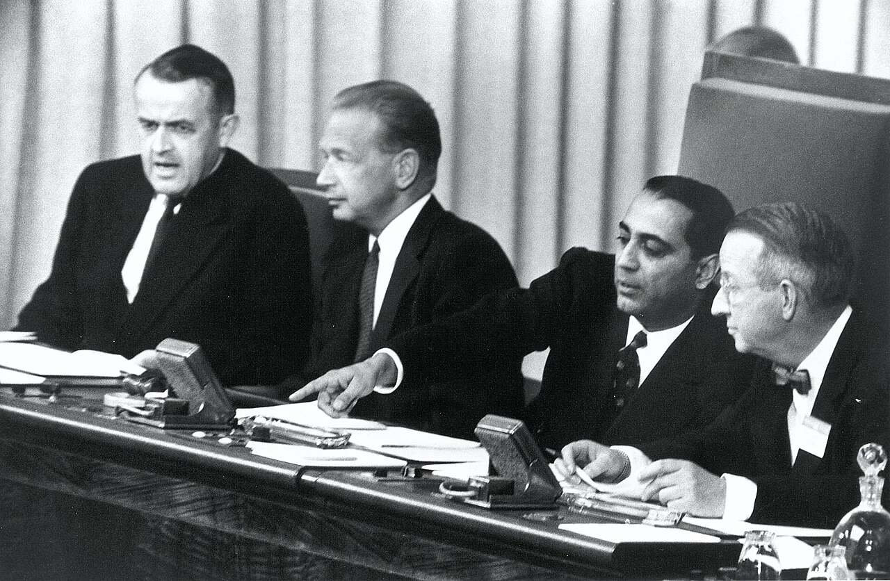
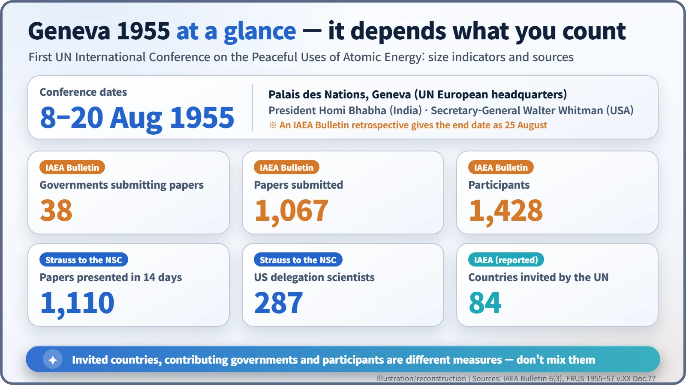
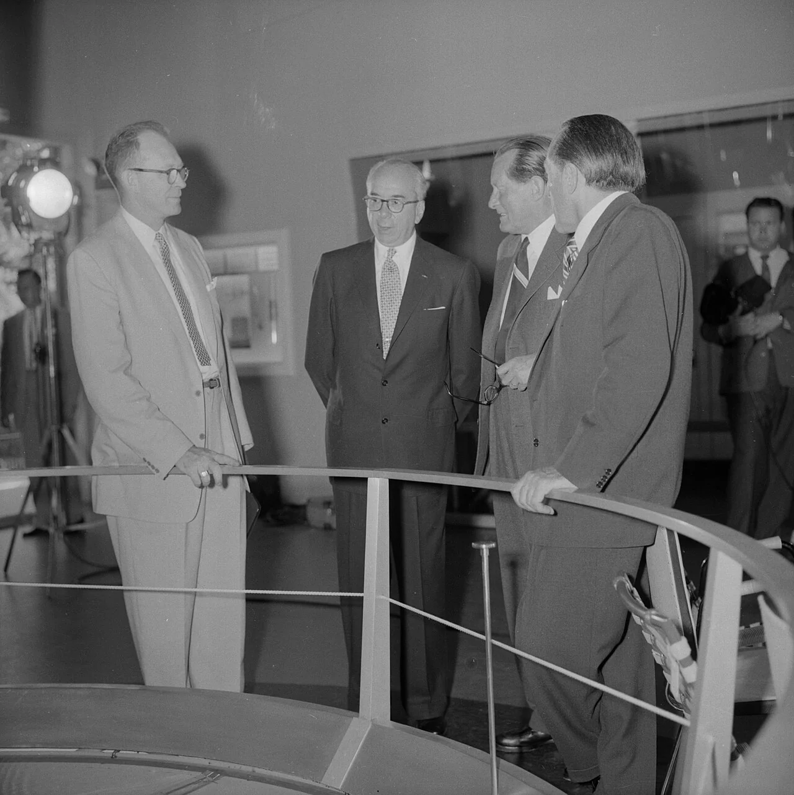
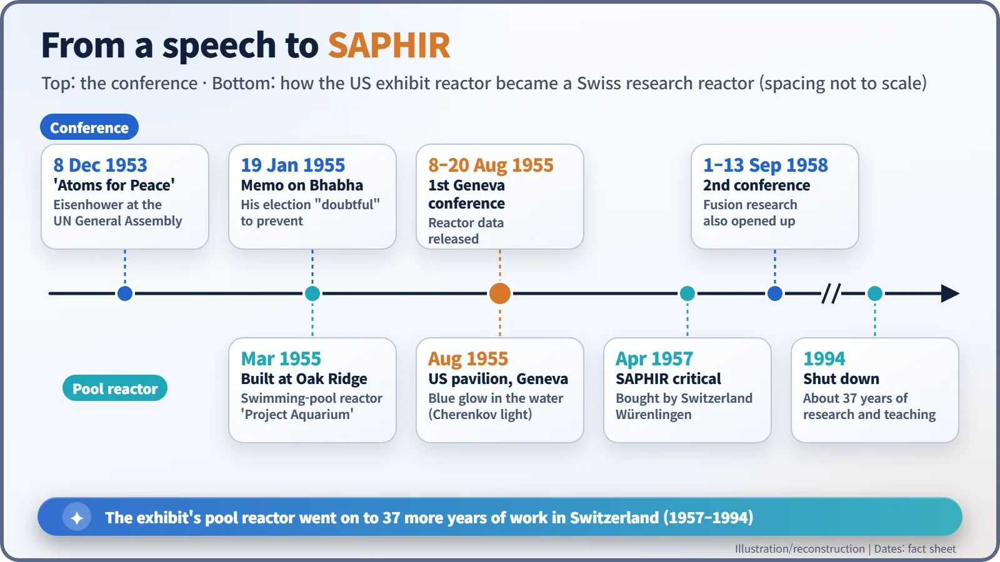

Nuclear History · 178
Queueing for a Blue Glow — Two Weeks That Declassified the Atom: the First Geneva Conference on the Peaceful Uses of Atomic Energy (1955)
More than a thousand papers, a contested choice of president and a glowing reactor in a pool: two weeks in Geneva that turned atomic secrets into shared science.
From 8 to 20 August 1955, the first United Nations International Conference on the Peaceful Uses of Atomic Energy brought scientists from East and West together in Geneva. Under the presidency of India's Homi Bhabha, more than a thousand papers were presented and a working American pool reactor was put on public display, opening up reactor data that had been secret since the war.
Queueing for a blue glow
Geneva, August 1955. In the United States pavilion near the United Nations' European headquarters, visitors queued at a railing and looked down into a deep tank of water. At the bottom, a soft blue light shimmered. It was a working nuclear reactor. Only a few years earlier, reactors had been things you saw behind barbed wire, and only after a security clearance. [5]
An open lecture in the middle of the Cold War
The road to Geneva began with President Eisenhower's "Atoms for Peace" speech to the UN General Assembly in December 1953. The following December the General Assembly decided to hold an international conference on the peaceful uses of atomic energy, and the venue was the Palais des Nations in Geneva. It ran from 8 to 20 August 1955 (an IAEA Bulletin retrospective gives the closing date as 25 August). [2] [3]
The preparations were not entirely calm. A confidential State Department memo of 19 January 1955 shows that Lewis L. Strauss (1896–1974), chairman of the US Atomic Energy Commission, objected to India's Homi J. Bhabha (1909–1966) becoming conference president. Yet Britain had originally wanted to nominate Bhabha, and the Soviet Union said it would nominate him too. The memo concluded that "it is doubtful in any event that we can prevent Bhabha's appointment." Washington concentrated instead on the post the memo called "the most important officer": the secretary-general, who controlled papers and invitations. It went to Walter G. Whitman of MIT. In the memo's margin, next to the suggestion that Strauss be asked to drop his opposition, someone wrote: "He did." [1]

A thousand papers in two weeks
Nothing on this scale had been seen before. According to the IAEA Bulletin, 38 governments submitted 1,067 papers and 1,428 people took part. Reporting to the National Security Council in October, Strauss said that 1,110 scientific papers "had been presented during the fourteen days" and called it "the largest scientific gathering that the world had ever seen." Other figures float around too: 84 countries invited, or, in Time magazine's count, about 1,200 scientists from 72 nations. They differ because they measure different things: invitations, contributing governments, people in the room. [3] [2] [6]

The mood was summed up by AEC commissioner Willard Libby: "Now everybody feels he can talk freely." The United States published the price of deuterium and uranium-235 and how to extract uranium concentrate from ore; Britain gave its expected cost of nuclear electricity; the Soviet Union presented a model of its 5,000-kilowatt power station outside Moscow. One Israeli scientist, clutching a thick stack of reports, reportedly said: "This'll keep me busy for years." [6]
Not everything came out, though. What was released was reactor design and basic fission data; weapons and enrichment technology stayed locked away. Fusion research would not be opened up until the second Geneva conference, three years later.
The conference also had its quieter moments of reflection. On the evening of 10 August, Niels Bohr gave a public lecture titled "Physical Science and Man's Position". (Some summaries say Bohr organised the conference; he did not. It was run by the UN with an international advisory committee.) And for all the talk of cooperation, the delegations were also on show to one another. The United States sent 287 scientists, and Strauss later admitted to the National Security Council that he had found the Soviet exhibit more interesting than the British one, noting that the Soviet scientists were mostly young men and that the Soviets were far from technically backward. Science was being shared, but it was also being watched. [2]
The president's bold forecast
In his opening address on 8 August, Bhabha made a prediction that is still quoted: "I venture to predict that a method will be found for liberating fusion energy in a controlled manner within the next two decades." Asked whether fusion would make fission obsolete, he replied: "There will probably be a place for all of them. Airplanes have not eliminated railroads." Seventy years on, controlled fusion is still at the experimental stage, which tells you how high hopes were running in 1955. [6]
Why the pool reactor stayed in Switzerland
The blue-glowing reactor from the opening scene was a "swimming-pool" research reactor that Oak Ridge National Laboratory had begun building in March 1955. The water does three jobs at once: it slows the neutrons, carries away the heat and shields the radiation, which is why you can look straight down into it. The blue light is Cherenkov radiation, given off by electrons travelling through water faster than light itself travels in water. [4] [5]
When the conference ended, Switzerland bought the reactor; the Historical Dictionary of Switzerland gives the price as 770,000 Swiss francs. Moved to Würenlingen and renamed SAPHIR after its sapphire glow, it reached criticality in April 1957 and ran until 1994. [7] [5]

Open information, then an industry
Strauss told the National Security Council that the conference had paid "a handsome dividend in the shape of a victory for our fundamental national policy," because it undercut Soviet claims that America wanted atomic energy only for war. Cold War calculation was clearly part of the picture. But the practical result was that many countries now started from the same body of data. The proceedings filled 16 volumes plus an index, the conference met again in 1958, 1964 and 1971, and in July 1957 a permanent body for international cooperation, the International Atomic Energy Agency, opened its doors. For two weeks, the reactor had come out from behind the wire and stood behind a simple railing for anyone to see. [2]
